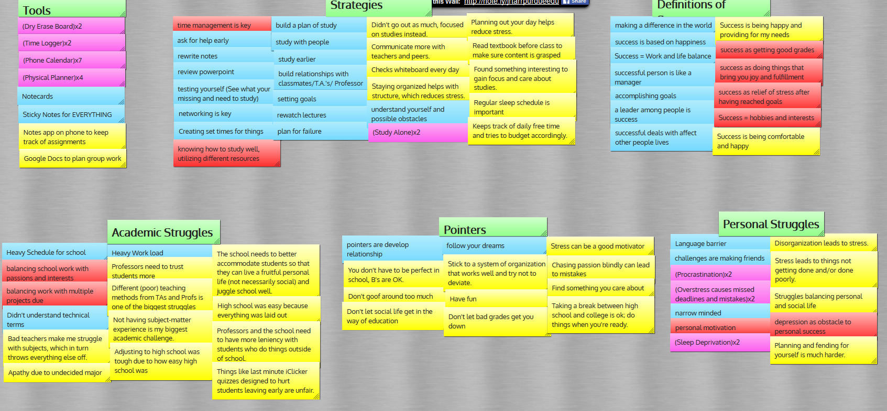

FlexAble
The Problem
College can be a constant struggle for many students. Between classes, work, social lives, and even just getting sleep, there are many places in their lives where students feel they could be more successful. We wanted to design an app or website that could help students reach the success they strived for and help them in their daily lives.
Our Team
 |
 |
 |
| Cris | James (me) | Dara |
My Role:
- User Research - Initial Interviews, Affinity Diagramming, Usability Testing
- Ideation - Product Conceptualization, Storyboarding
- Design - Wireframing, Design Revision
Our Goals
- Talk to real college students to get a picture of what success means to students.
- Determine what challenges students face in being successful.
- Create an app to help narrow the gap between students and their success.
The Process
Interviews
Our first step in designing our product was learning more about how students defined success and what struggles they faced in achieving it. We interviewed 13 students of varying classes, genders, and other demographics in hopes of getting many different definitions of success.
We asked 6 main questions during our interviews, and asked probing questions from there based on responses:
- How do you personally define success?
- When you envision a successful person, what do they look like?
- What are some challenges you faced in your first semesters of college?
- How did you resolve those problems?
- What tools do you use to achieve success?
- What are the most important things you've learned as you've gone through college?
From there we gathered our insights into an affinity diagram. This broke down our findings into easier to understand categories and helped us sort out what bits of information would be the most applicable to our project goal.
What We Learned
After looking at the results from our interviews, we determined that students generally defined success as a balance of work, social, and academic life.
We also found that students most often found themselves stressed and overwhelmed when faced with a lack of structure in their day.
Using these findings, we crafted our Problem Statement:
Not only did we use what we learned from the interviews to identify our problem, we also used it to craft a picture of what our target user was.
Persona: Daniel
Image Source: http://www.auto.edu/wp-content/uploads/2014/12/ati-student-housing.jpg

- Age: 19
- Class: Sophomore
- Major: Physics
- Occupation: Student/Sandwich Artist
- Key Traits: Hard-Worker, Ambitious, Disorganized, Social
Daniel is a hard-working student in his sophomore year at Purdue University. He started off his college career studying Physics at Ball State in hopes of becoming a physics professor, but decided to transfer to Purdue because he wanted a more rigorous academic challenge.
However, Daniel severely underestimated just how challenging Purdue would be, and his course load needs him to commit a lot of time in the evening towards studying. He also had to take on a part-time job at Subway® in order to help alleviate some of his costs.